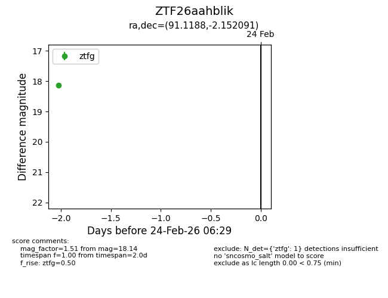
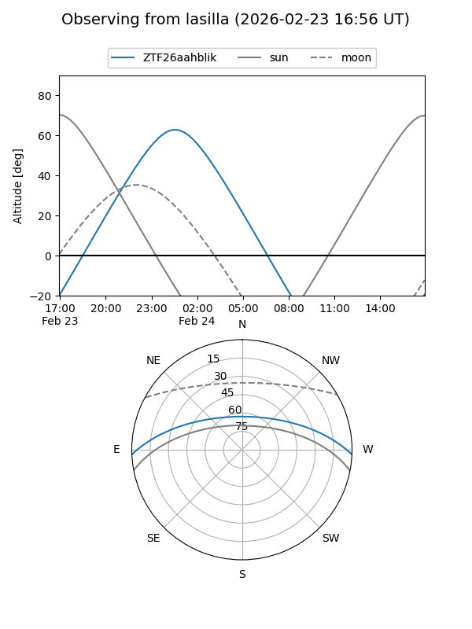
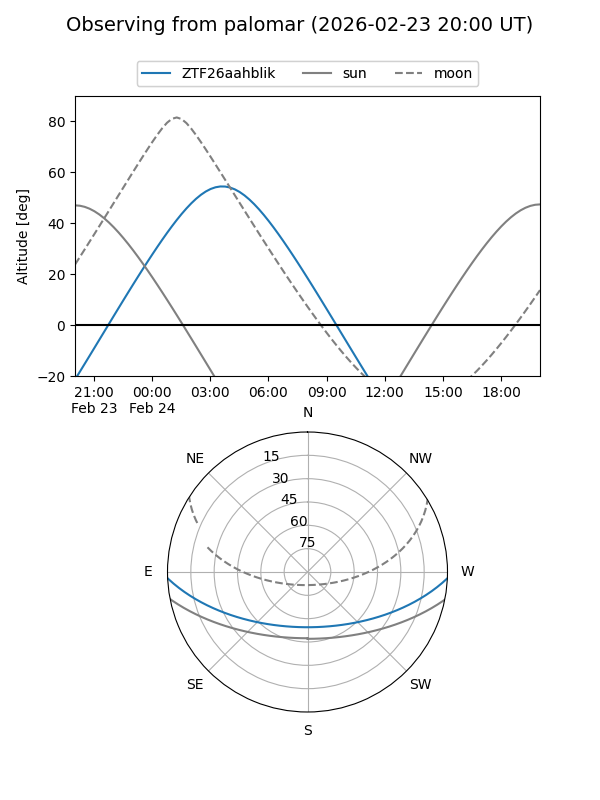

ZTF26aahblik
Target ZTF26aahblik at 2026-02-24 09:08
Aliases and brokers:
FINK: link
Lasair: link
ALeRCE: link
alt names
ZTF26aahblik (ztf,fink_ztf)
Coordinates:
equatorial (ra, dec) = 91.1188,-2.15209
equatorial (HMS+DMS) = 06:04:28.52,-02:09:07.53
galactic (l, b) = (209.4636,-11.42542)
Flags:
Photometry:
last ztfg=18.14
1 ztfg detections
Lightcurve

Visibility


Additional plots